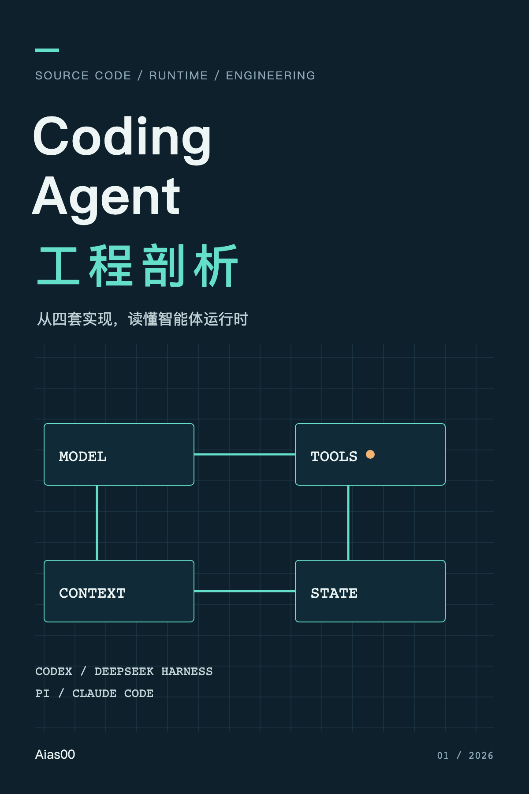

SOURCE CODE / AGENT RUNTIME / ENGINEERING
Coding Agent
工程剖析
从 Codex、DeepSeek Harness、Pi 与 Claude Code 读懂智能体运行时
沿一次真实工程任务的执行路径，读懂模型背后的工具、权限、上下文与恢复机制。
继续上次阅读 →
24章深入分析
3.1 万中文汉字 · 不含源码索引
68项固定快照证据
10项故障与恢复测试
从模型提议，走到可验证的工程结果
分别进入 Codex、DeepSeek Harness、Pi 和 Claude Code 的可见实现，再用同一组问题比较它们：工具何时执行，权限怎样生效，上下文如何形成，中断以后相信什么。
这是一部基于本地快照的独立研究书籍。正文包含设计解释、失败路径、可运行实验和逐项源码定位；没有把静态分析包装成产品性能排名。
全书目录
版本与复核
第 1.0.0 版 · 研究日期 2026-10-30。Claude Code 材料为 2.1.88 发布包提取文本；引用文件已与本地 source map 对照。三个开源项目按固定 Git 提交分析。